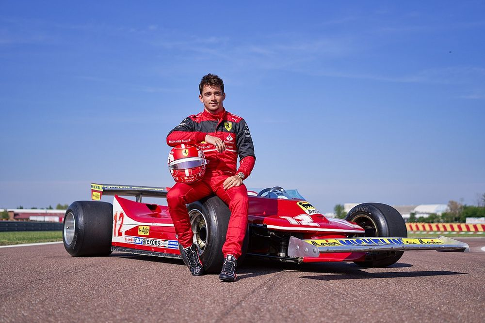

| HOME | FASHION | TRAVEL | FOOD | LIFESTYLE | SPORTS | HEALTH | MOVIES | ABOUT US |
|---|
SPORTS
1. Andy Murray grinds down Kokkinakis in late-night epic
Former world number one Andy Murray produced one of his greatest ever comebacks to sink home hope Thanasi Kokkinakis in a titanic second-round
thriller at the Australian Open in the early hours of Friday morning. When Murray finally got the job done in what was his 250th Grand Slam match,
the clock was just past 4.05am local time but a sizeable and vociferous crowd had remained glued to their seats inside the Margaret Court Arena.
2. We are just making our lives so much more difficult’ – Leclerc calls on Ferrari to ‘improve now’ after Montreal Q2 exit

A furious Charles Leclerc implored Ferrari to “improve now” after the Monegasque failed to reach Q3 for a second consecutive race –
Leclerc finishing qualifying in P11 for Sunday’s Canadian Grand Prix.
Leclerc – who qualified P19 for the Spanish Grand Prix last time out – was circulating around Montreal’s Circuit Gilles Villeneuve in mixed conditions
in the Q2 segment of qualifying. But with the track half-wet and half-dry, Leclerc radioed to Ferrari to ask to make the move onto slick tyres –
a call also made by the likes of Williams driver Alex Albon.
However, Leclerc’s request wasn’t immediately heeded – and while Albon was able to top the segment and progress to Q3, Leclerc stayed out to
set a lap on the intermediates, before finding himself pushed into the drop zone after changing onto the slick tyres late on.
3. The fact that the next best score wasn’t even 40’, ‘Out of the world’, ‘Chabuk’: Indian team reacts to Shubman Gill’s double hundred
Shubman Gill became only the fifth Indian to score a double hundred on Wednesday in the first ODI against New Zealand in Hyderabad.
A knock that propelled India to 349 in the first innings, eventually helping the hosts claim a 12 run win and win him the player of the match award.
Former India captain Virat Kohli, also showered high praise for the 23-year-old.
Copyright 2023, All Right Reserved, www.tlcnewsofficial, Designed by : YASHIKA GOEL